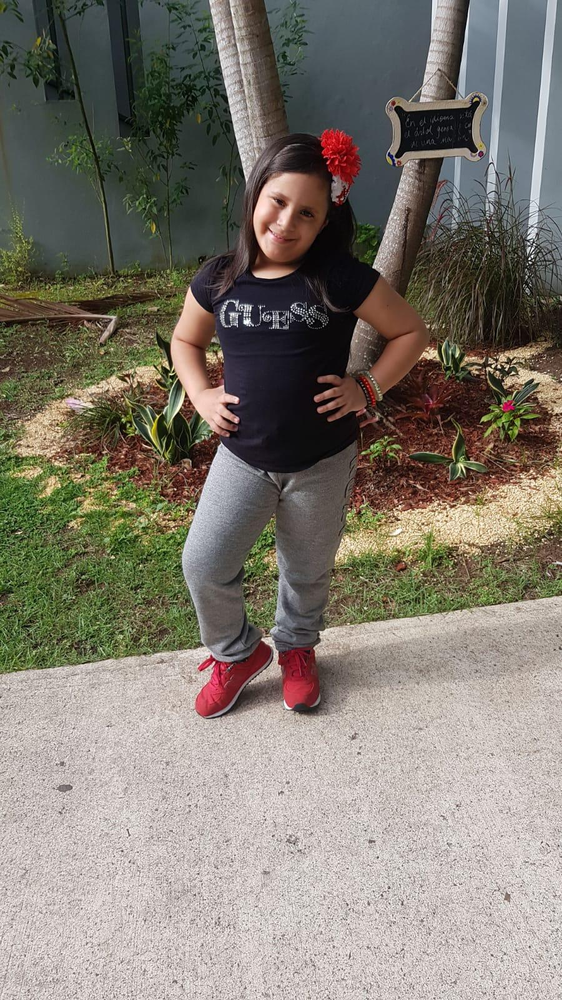
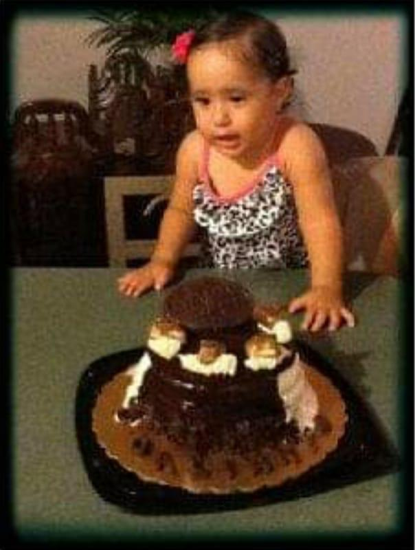

About Marine
Marine tiene el proposito de proteger especies marinas y ayudar al medio ambiente. Informamos sobre los mayores problemas y brindamos soluciones sencillas.
Hacemos actividades, como recoger basura de la playa y recaudaciones de fondos para organizaciones que se especializan en la proteccion de especies marinas.
Tambien damos charlas y presentaciones en colegios, talleres y mas.

Más sobre la creadora
Me llamo Galianys Caro, tengo 12 y soy de Puerto Rico. Me encanta ir a la playa y desde chiquita, siempre he amado a los animales marinos, especialmente el manati

